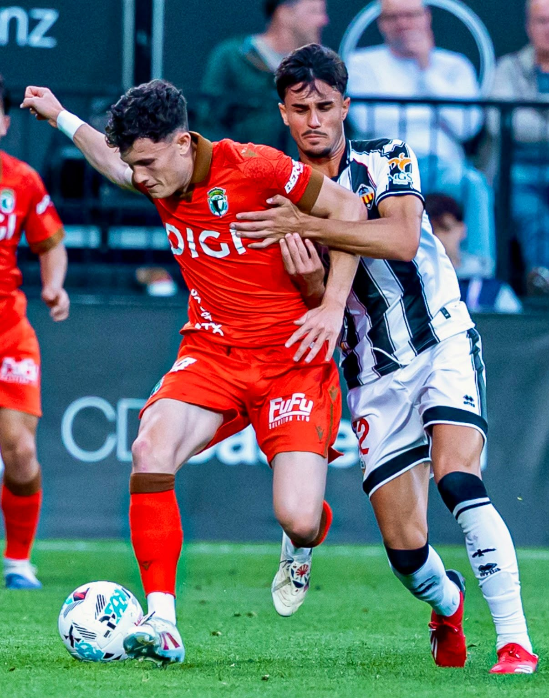

El Burgos CF afronta el partido contra el Castellón con el objetivo cerrar una semana perfecta sumando 3 victorias.
Los de Sergio Francisco llegan al duelo en una buena dinámica. Han ganado sus últimos 3 encuentros, lo que se traduce en confianza.
Aunque saben de la dificultad que significa enfrentarse al líder de la categoría, un Castellón que va como un tiro, son conscientes de que les pueden plantar cara y mucho más en El Plantío, el escenario perfecto para ello.
La verticalidad del equipo castellonense, con jugadores como Israel Suero u Ousmane Cámara, con 5 y 4 goles respectivamente, mete miedo a un Burgos que intentará hacer frente a tal ataque.
Las estadísticas y los últimos resultados no favorecen a un conjunto blanquinegro que, desde la vuelta del cuadro valenciano al fútbol profesional en la temporada 24-25, no ha sido capaz de vencerle. Es más, 3 de los últimos 4 encuentros son derrotas (0-2, 2-1, 0-0, 3-1).
Además, la visita del Castellón al estadio municipal de El Plantío supondrá la vuelta de Iñigo Córdoba a las orillas del Arlanzón, donde estuvo sus dos últimas temporadas (24-25 y 25-26). El hermano de Aitor ha participado hasta el momento hasta en 10 partidos: 7 de titular, 3 entrando desde el banquillo. 568 minutos en los que ha repartido una asistencia.
Supone una prueba de fuego para comprobar si los de Sergio Francisco pueden pelear en lo más alto de la clasificación, como así están demostrando hasta la fecha.
Por todo lo comentado, los blanquinegros intentarán en la tarde del domingo dar un golpe sobre la mesa y llevarse los 3 puntos de un partido que promete y mucho por las aspiraciones y momentos de ambos conjuntos.
Veremos lo que ocurre, pero lo que sí tenemos claro es que disfrutaremos de uno de los mejores duelos que nos puede ofrecer esta Segunda División. Primero contra sexto. Sexto contra primero. 6 puntos de diferencia. Un mismo objetivo.